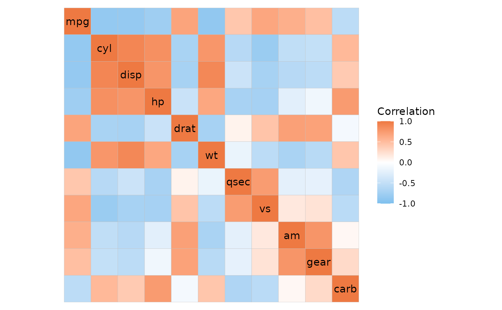

ggcorrhm() for long format data.
Usage
ggcorrhm_tidy(
x,
rows,
cols,
values,
annot_rows = NULL,
annot_cols = NULL,
labels = NULL,
facet_rows = NULL,
facet_cols = NULL,
cor_in = TRUE,
...
)Arguments
- x
Data containing data to plot or to correlate.
- rows, cols, values
Columns to use as rows, columns, and values in the plotted matrix (if
cor_inis TRUE) or the matrix to compute correlations from (cor_inis FALSE).- annot_rows, annot_cols
Columns containing values for row and column annotations.
- labels
Column to use for cell labels, NULL for no labels, or TRUE to use the cell values. If
cor_inis FALSE, only NULL, TRUE or FALSE is supported.- facet_rows, facet_cols
Columns to use for row/column facets.
- cor_in
Logical indicating if the values are correlation values (TRUE, default) or values to be correlated. See details for more information.
- ...
Additional arguments for
ggcorrhm().
Details
If cor_in is TRUE (the default), ggcorrhm_tidy() behaves similarly to gghm_tidy() but with the colour
scales and arguments of ggcorrhm() instead of gghm().
If cor_in FALSE, the data is converted to wide format and the column-column correlations are computed.
This means that if asymmetric correlation matrices are to be plotted the correlations have to be computed
in advance and plotted with cor_in as TRUE. Additionally, annot_rows and annot_cols will both use
the cols column for names, and labels can only take TRUE or FALSE.
On the other hand, if cor_in is TRUE any computation of correlations is skipped, meaning that p-values
cannot be computed and would have to be generated in advance and passed as cell labels.
Examples
library(dplyr)
#>
#> Attaching package: ‘dplyr’
#> The following objects are masked from ‘package:stats’:
#>
#> filter, lag
#> The following objects are masked from ‘package:base’:
#>
#> intersect, setdiff, setequal, union
# Basic example with long format correlation data
# Make some correlation data in long format
cor_dat <- cor(mtcars)
hm_in <- data.frame(row = rep(colnames(cor_dat), ncol(cor_dat)),
col = rep(colnames(cor_dat), each = ncol(cor_dat)),
val = as.vector(cor_dat))
ggcorrhm_tidy(hm_in, row, col, val,
# Indicate that the data consists of correlation coefficients
cor_in = TRUE)

# Or let the function compute the correlations
# (this limits some other functionality, see details)
raw_dat <- data.frame(row = rep(rownames(mtcars), ncol(mtcars)),
col = rep(colnames(mtcars), each = nrow(mtcars)),
val = unlist(mtcars))
ggcorrhm_tidy(raw_dat, row, col, val, cor_in = FALSE)